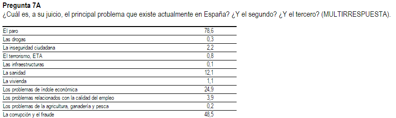
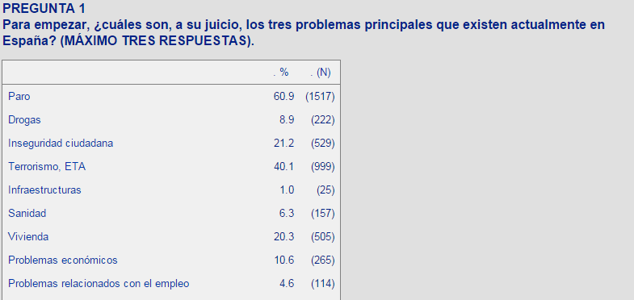

El proceso:¿Cómo lo hemos hecho?
Cada mes 2.500 españoles mayores de edad son seleccionados de forma aleatória proporcional teniendo en cuenta otras variables como sexo, edad, población o hábitat. Los seleccionados son entrevistados por los agentes del CIS personalmente en su casa. Es a partir de estas encuestas de donde se obtienen la información para los barómetros (más información sobre el método).
Estos estudios contienen un bloque de preguntas fijas y otro variable que está orientado a un tema de interés político o social según la ocasión. Dentro de este grupo de preguntas fijas nos centramos en las siguientes preguntas:
- -¿Cuál es, a su juicio, el principal problema que existe actualmente en España?¿Y el segundo?¿Y el tercero?(RESPUESTA ESPONTÁNEA) - Desde mar'06
- -¿Cuáles son, a su juicio, los tres problemas principales que existen actualmente en España?(MÁXIMO TRES RESPUESTAS) - Desde sep'00 a feb'06

Estas nos dan información sobre los 3 principales problemas que percibe la población española y son las que utilizaremos para saber que le preocupa.
Podemos consultar los resultados de los barómetros a lo largo del tiempo en el banco de datos.
Dentro de los diferentes tipos de sesiones que se realizan en el Congreso elegimos las sesiones de control al gobierno, que se celebran actualmente los miércoles. Aunque estas no están definidas en la constitución ni por los reglamentos parlamentarios, se han consolidado con la práctica debido a que es en estas donde los diferentes partidos políticos explican sus inquietudes respecto a nuevas legislaciones o problemas a solucionar y el presidente del gobierno, junto con sus diferentes ministros, debe dar respuesta a ellas.
Los diarios de estas sesiones los encontramos en la web del congreso, 100% accesibles desde un buscador.
Podemos encontrar información sobre su funcionamiento en el siguiente documento:
"[...] Una sesión plenaria ordinaria dedica por regla general un mínimo de dos horas a debatir preguntas e interpelaciones. Estas sesiones de control se llevan a cabo los martes por la tarde en el Senado y los miércoles por la mañana en el Congreso.
En primer lugar se debaten las preguntas y, a continuación, las interpelaciones. La respuesta del Gobierno a estas últimas da lugar a una iniciativa del grupo interpelante que recoge las conclusiones de ese debate con el Ejecutivo y las convierte en propuestas (moción consecuencia de interpelación). Estas se debaten en la siguiente sesión plenaria. [...]"
El Scrapping es el proceso por el cual extraemos los datos de una página web. En este caso hemos procesado los barómetros del CIS utilizando su banco de datos y los diarios del Congreso a través de su buscador.
Para esta parte del proceso han sido necesarios los paquetes: Selenium y BeautifulSoup.
Hemos utilizado Selenium para descargar los diferentes Barómetros y BeautifulSoup para extraer la información de las preguntas que nos interesaban. Para su posterior tratamiento lo hemos guardado en una base de datos en MongoDB
Como respuesta a cada pregunta obtenemos 30 tópicos diferentes, por lo que a lo largo de todo el periodo en el que hemos generado datos (desde sept.'00 hasta feb. '15) hemos encontrado alrededor de 150 tópicos diferentes. Debido a la imposibilidad de visualizar tal cantidad de tópicos y que muchos de ellos eran similares decidimos agruparlos en 14 clusters: Educación, Salud, Corrupción, Medio Ambiente, Servicios Públicos, Ideología, Economía, Empleo, Juventud, Justícia, Social, Terrorismo, Vivienda, Seguridad Ciudadana y Otros.
A partir de estos nuevos clusters agruparemos los datos y obtendremos la información necesaria para los gráficos.
Nos interesan los datos desde septiembre de 2000 a marzo de 2015, por correspondencia de los datos que tenemos del CIS.
Las paginas web del Congreso se generan dinámicamente. Para obtener el listado y la descarga de los documentos de los diarios de sesiones utilizamos las herramientas de las librerias Selenium y BeautifulSoap.
Una vez obtenidos los documentos de los diarios de sesiones procedemos al análisis de la estructura de los textos para diseñar un proceso que nos permita extraer la información deseada. El contenido de los diarios de sesiones se estructura en forma de diálogos en torno a una pregunta o tema previamente registrado (todo tema tiene asociado un número de expediente que la identifica) por lo que cada intervención queda registrada literalmente indicándose al inicio quien la realizó. Sabiendo esto los documentos quedarán divididos en preguntas y respuestas realizadas en la sesión de control, los miembros y los grupos parlamentarios que las realizaron.
Para identificar a los miembros del Congreso en sus intervenciones y grupos parlamentarios a los que pertenecen obtenemos la información de otro apartado de la web del congreso: Diputados
Recurriremos nuevamente a Selenium y BeautifulSoap para obtener una relación de diputados, grupos parlamentarios y legislaturas del periodo analizado. Nuevamente esta información se guarda en MongoDB para su para usarla posteriormente en el proceso de extraccion de preguntas e intervenciones.
Para la extracción de preguntas e intervenciones utilizamos expresiones regulares. Con ellas analizamos línea a línea el contenido de un diario buscando inicios o finales de preguntas e intervenciones, diputados, grupos parlamentarios...
El proceso empieza cuando encuentra las marcas que indican el inicio de los textos de preguntas, omitiendo secciones del diario que no se correspondan con las preguntas de la sesión de control, como por ejemplo: "PROPOSICIONES NO DE LEY", "CONVALIDACIÓN O DEROGACIÓN DE REALES DECRETOS-LEYES", "JURAMENTO O PROMESA DE ACATAMIENTO DE LA CONSTITUCIÓN", etc. También se omiten en el proceso de extracción las intervenciones realizadas por el moderador de la cámara.
A continuación se muestran un ejemplo en el que se ve el texto original y despues del proceso de análisis (con un fondo distinto en función del grupo político al que pertenece el diputado que realiza la intervención: azul, grupo popular; rojo, grupo socialista; gris, grupo mixto, ...):
Utilizamos el método String Metrics, en el proceso de análisis para detectar posibles errores de transcripción en los diarios de sesiones.
A continuación puedes ver como queda un diario de sesiones después de todo el proceso. Si pasamos el cursor sobre las intervenciones nos da información sobre el interlocutor, grupo político y demás información obtenida durante el análisis.
En la base de datos del Congreso encontramos 311 documentos y 7000 intervenciones, etiquetar esto dentro de los clusters del CIS es un trabajo titánico así que trazamos un plan: extraeriamos las palabras clave de cada intervención y creariamos un diccionario "clasificador" que se iría nutriendo de las palabras clave que fuéramos encontrando con el objetivo de clusterizar el máximo de documentos.
Definimos como palabra clave o key word cualquier n-grama de palabras (secuencia de una o mas palabras) dentro del documento. Nos dimos cuenta que, en general, estos n-gramas estan compuestos por nombres y adjetivos, así que nos centramos en estos dentro de nuestros documentos.
Para encontrar estas palabras clave utilizamos RAKE (Rapid Automatic Keyword Extraction), un sencillo paquete de Python que utiliza solo un parámetro: una stop-list (o palabras a descartar), en nuestro caso consiste en cualquier palabra que no sea un nombre o un adjetivo. A partir de esto, RAKE generará un grafo de concurrencia de posibles palabras clave. Además, obtenemos una puntuación para cada una de ellas que consiste: grado(pc)/frec(pc).
Una vez finalizado este proceso construimos una matriz de frecuencia de los terminos utilizando las palabras clave como vocabulario (bag of the words) y mediante la librería scikit-learn transformar esta matriz en una matriz de dispersión. A continuación aplicamos un algoritmo K-means utilizando "k-means++" para crear los clusters.
Seguidamente, después de varias iteraciones del K-means conseguimos distinguir una série de clusters que son claramente afines a los clusters del CIS. A partir de aquí cremaos un clasificador simple, y lo entrenamos para clasificar el resto de documentos.
Finalmente, después de haber etiquetado los documentos utilizamos el número de líneas de cada intervención como medida de tiempo. Obtendremos una série de tablas y diccionarios que se utilizan mas adelante para la realización de los gráficos.
Empezamos queriendo imitar a USA, nos encantaba este gráfico del NY Times, así que no podía faltar en nuestra presentación final, pero también eramos conscientes de que no cumpliriamos uno de nuestros objetivos principales: explotar la información del CIS.
Con este objetivo en mente surgieron los gráficos del radar y las diferencias, fantásticos ambos para ver como han ido cambiando nuestras preocupaciones a lo largo del tiempo. Para ello utilizamos el programa D3 y pasamos de gráficos estáticos a dinámicos creando transiciones para ayudar a la visualización.
Cuando estabamos a punto de finalizar este proyecto, nos encontramos con el increíble gráfico PolitiLines, teniamos toda la información: los clusters, las keywords, los partidos políticos que habian hablado sobre cada tema así que decidimos crear una versión española de este.